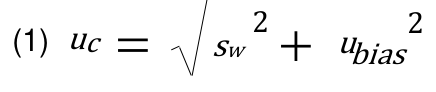
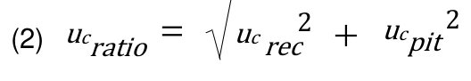

Technical Documents · TD2019GH
Edition v1.0, 2019 (version 1.0) · effective 15 May 2019 · superseded
Retrieved on 25 November 2026 from https://www.wada-ama.org/sites/default/files/resources/files/td2019gh_v1_final_eng.pdf
Editions: v1.0, 2027 (current) · v1.0, 2021 · v1.0, 2019 · v1.0, 2015
p. 1
HUMAN GROWTH HORMONE (hGH) ISOFORM DIFFERENTIAL IMMUNOASSAYS FOR DOPING CONTROL ANALYSES
The purpose of this Technical Document is to ensure a harmonized approach in the application of the Isoform Differential Immunoassays for the detection of doping with human Growth Hormone (hGH) in sport. This Technical Document provides direction on the Sample pre-analytical preparation procedure, the performance of the Test Method(s) and the interpretation of the test results.
1.0 Introduction to the Test Method
The Isoform Differential Immunoassays for the detection of doping with hGH were developed to distinguish between the proportions of hGH isoforms found under normal physiological conditions and those found after recombinant (rec) hGH injection [1, 2].
The Test Method is essentially based on the established principle that the normal composition of hGH in blood is a mixture of different isoforms, present at constant relative proportions. In contrast, recGH is comprised almost exclusively of the monomeric 22-kDa molecular form. The administration of exogenous recGH not only leads to an increase in the concentration of the 22-kDa isoform but also causes a reduction of the non-22-kDa concentrations, thus altering the natural ratios established between these hGH isoforms [3].
1.1 Principle of the Test Method
In order to perform the Test Method(s), two separate kits ('1' and '2', supplied by CMZ-Assay GmbH, Germany), are used for the measurement of the hGH isoforms for each Sample analysis [4]. Either kit may be utilized for the Initial Testing Procedure, whereas both kit '1' and kit '2' shall be used for the Confirmation Procedure(s).
Each kit contains one 'recombinant' and one 'pituitary' assay. In the 'recombinant' (recGH) assay, the coated capture antibody preferentially binds to the monomeric 22-kDa hGH present in the Samples, whereas the 'pituitary' (pitGH) assay employs a capture antibody that recognizes a variety of pituitary-derived hGH isoforms. The respective assays are referred to as "rec1", "pit1", "rec2" and "pit2". The result of the Test Method is expressed as the ratio of the concentrations recGH / pitGH for each particular kit.
p. 2
2.0 Assay Requirements
Prior to the implementation of this Test Method in routine Doping Control analysis, the Laboratory shall fulfill the following requisites:
- Validate the assay performance on-site, including, for example, the determination of the assay Limit of Quantification (LOQ), within-Laboratory Repeatability (sr) and Intermediate Precision (sw).
The acceptance values for these parameters of assay performance, applicable to the separate determinations of recGH and pitGH concentrations ("rec1", "pit1", "rec2" and "pit2") are:
- sr (expressed as intra-assay Relative Standard Deviation, RSD) ≤ 15%.
- sw (expressed as inter-assay RSD) ≤ 20%.
- LOQ ≤ 0.050 ng/mL¹ , defined as the lowest concentration with sr ≤ 15% and sw ≤ 20%.
- In addition, the Laboratory shall determine the assay Measurement Uncertainty (MU) from Laboratory validation data. The combined standard uncertainty (uc), applied to the assay recGH / pitGH ratios, shall be not higher than the maximum levels of uc_Max set from inter-Laboratory External Quality Assessment Scheme (EQAS) data [relative uc_Max = 20% for both kits, at values close to the corresponding Decision Limits (DLs)].
- Participate successfully in at least one WADA-organized EQAS in order to demonstrate readiness for assay implementation. In cases of identified deficiencies, proper corrective action(s) shall be implemented.
- Obtain ISO/IEC-17025 accreditation for the hGH Isoform Differential Immunoassay method from an Accreditation Body that is a full member of the International Laboratory Accreditation Cooperation (ILAC) and a signatory to the ILAC Mutual Recognition Agreement (ILAC MRA).
2.1 Assay Pre-Analytical Procedure
Upon reception of the "A" and "B" Samples in the Laboratory, the following steps shall be followed:
- Check that the blood Samples have been collected in tubes containing an inert polymeric serum separator gel and a clotting activation factor (BD Vacutainer ® SSTTM -II tubes, EU ref 367955; BD Vacutainer ® SSTTM -II Plus Advance tubes, EU ref 367954; BD Vacutainer ® SSTTM tubes, US ref 367986) in accordance with the WADA Guidelines for Blood Sample Collection [5]. Such blood Samples should have been kept in a refrigerated state (shall not be frozen) following collection and during transportation to the Laboratory.
¹The Laboratory LOQs, established at ≤ 0.050 ng/mL on the basis of Test Method performance criteria (sr ≤ 15% and sw ≤ 20%), should not be lower than the respective LOQ values established by the kits' manufacturer.
p. 3
- Alternatively, Samples may be received in the Laboratory as frozen or refrigerated serum Samples, following the clotting and centrifugation of the blood and separation of the serum fraction at the site of Sample collection.
- Any Samples delivered to the Laboratory as plasma shall not be accepted for the purposes of hGH analysis with the current kits. In line with this, the Sample Collection Authorities are provided with guidelines for collection of blood Samples for hGH analysis, which specify that the matrix of analysis is serum [5]. The Laboratory shall notify and seek advice from the Testing Authority regarding rejection or Analytical Testing of Samples for which irregularities are noted (as per ISL; [6]). In cases of Sample collection in the incorrect matrix (to be determined by the Results Management Authority), the results of such analysis shall be disregarded.
- Check the status of the Sample(s) (for example, evidence of haemolysis) and the integrity of the collection tubes (for example, evidence of breakage of the separating gel). The Laboratory shall note any unusual condition of the Sample, record such condition(s) and include it in the Test Report to the Testing Authority in ADAMS.
- For Samples received as whole blood in SSTTM -II tubes or SSTTM -II Plus Advance tubes or SSTTM tubes:
"A" Sample
- The "A" Sample shall be centrifuged for 10-15 min at 1300-1500g as soon as possible after reception.
- The whole separated serum fraction from the "A" Sample should be transferred into another tube or aliquoted into new vials, which shall be properly labelled to ensure Laboratory Internal Chain of Custody documentation. One Aliquot shall be used for the Initial Testing Procedure. The remaining "A'' Sample Aliquot(s) not used for the Initial Testing Procedure shall be stored frozen² until the "A" Confirmation Procedure, if needed.
- For the Initial Testing Procedure, ''A'' Sample Aliquots may be analyzed immediately after aliquoting or stored at approximately 4°C for a maximum of 24h before analysis (within a maximum of 4 days from Sample collection). Alternatively, the ''A'' Sample Aliquots shall be frozen² until analysis.
²For storage of Aliquots frozen, well-closing vials should be used (for optimal storage cryovials with an "O-ring" are recommended) and the following conditions are recommended:
· For short-term storage (up to three months) at approximately - 20°C.
· For long-term periods (more than three months) freeze at approximately - 20°C and transfer to approximately - 70 to - 80°C.
Thawing of the Sample(s) for analysis shall not be done under hot water or any other similar process that would raise the temperature of the Sample above room temperature. Thawing overnight at 4°C is recommended.
p. 4
"B" Sample
- The "B" Sample shall be centrifuged for 10-15 minutes at 1300-1500g as soon as possible after reception. The whole of the "B" Sample separated serum fraction shall be kept in the SSTTM -II or SSTTM - II Plus Advance or SSTTM Sample collection tube and step-frozen according to the tube manufacturer's instructions³ until analysis, if needed.
- Once the "B" Sample is thawed and opened, an Aliquot of the "B" Sample shall be used for the "B" Confirmation Procedure. The remaining "B" Sample serum fraction should be transferred into a new tube/vial and shall be sealed in front of the Athlete or the Athlete's representative or a Laboratory-appointed Independent Witness using a tamper-evident system and frozen² until Further Analysis, if needed.
- For Samples received as separated serum Samples:
a) Samples received as frozen separated serum fractions:
- These Samples shall remain frozen² until analysis.
- Once thawed, an Aliquot of Sample "A" shall be taken to be used for the Initial Testing Procedure. This Aliquot of Sample "A" may be stored at approximately 4°C if the Initial Testing Procedure is scheduled to take place within 24h of thawing. The remaining of the "A" Sample serum fraction not used for the Initial Testing Procedure may be kept in the Sample collection tube or aliquoted into new vials, which shall be properly labelled to ensure Laboratory Internal Chain of Custody documentation, and stored frozen² until the "A" Confirmation Procedure, if needed.
- Once the "B" Sample is thawed and opened, an Aliquot of the "B" Sample shall be used for the "B" Confirmation Procedure. The remaining "B" Sample serum fraction shall be kept in the Sample collection tube and shall be sealed in front of the Athlete or the Athlete's representative or a Laboratory-appointed Independent Witness using a tamper-evident system and frozen² until Further Analysis, if needed.
b) Samples received as refrigerated separated serum fractions:
- An Aliquot of the "A" Sample shall be taken as soon as possible upon reception. For the Initial Testing Procedure, "A" Sample Aliquots may be analyzed immediately after aliquoting or stored
³Place the tube into a dedicated isolating box before transferring it into a - 20°C freezer. In order to maintain the integrity of the separation gel, allow the freezing to proceed for at least 2h before moving or transferring the frozen tubes. Moving the tubes before the separating gel is frozen and stable may lead to contamination of serum by cellular material.
p. 5
at approximately 4°C for a maximum of 24h before analysis (within a maximum of 4 days from Sample collection). Alternatively, ''A'' Sample Aliquots shall be frozen² until analysis.
- The remainder of the "A'' Sample not used for the Initial Testing Procedure shall be kept in the Sample collection tube or aliquoted into new vials, which shall be properly labelled to ensure Laboratory Internal Chain of Custody documentation, and stored frozen² until the "A" Confirmation Procedure, if needed.
- "B" Samples shall be frozen² as soon as possible upon reception and thawed before analysis. Once the "B" Sample is thawed and opened, an Aliquot shall be used for the "B" Confirmation Procedure. The remaining "B" Sample serum shall be kept in the Sample collection tube and shall be re-sealed in front of the Athlete or the Athlete's representative or a Laboratory-appointed Independent Witness using a tamper-evident system and stored frozen² until Further Analysis, if needed.
2.2 Analytical Testing Procedure
For the performance of the Analytical Testing Procedure, refer to the test procedure described in the Instructional Insert provided with the test kits and the Laboratory Standard Operation Procedure (SOP).
In cases of contradiction between the Instructional Insert provided with the kits and the Laboratory SOP, or between the Instructional Insert and this Technical Document, the latter document shall prevail in each case.
Note: In order to ensure the quality of the assay performance, attention must be paid to the time of Sample signal acquisition on the luminometer, which shall be set at 1 s.
2.2.1 Analytical Testing Strategy
- Either kit '1' or kit '2' may be used for the Initial Testing Procedure using at least two (2) Aliquots taken from the original "A" Sample.
- In the case of an initial Presumptive Adverse Analytical Finding, both kit '1' and kit '2' shall be used for the Confirmation Procedure of the "A" Sample using three (3) new Aliquots of the original "A" Sample.
- For the "B" Confirmation Procedure, both kit '1' and kit '2' shall be used on three (3) Aliquots taken from the original "B" Sample. The Laboratory shall follow the requirements of the ISL for the performance of the "B" Sample confirmation analysis [6].
- For both "A" and "B" Confirmation Procedures, three (3) Sample Aliquots shall be measured, except in cases of limited Sample volume, in which case the maximum number of Aliquots that can be prepared should be analyzed [6].
p. 6
- In accordance with the ISL [6], the Laboratory shall have a policy to define those circumstances where the Confirmation Procedure of an "A" or "B" Sample may be repeated (for example, values of intra-assay RSD > 15%).
- It is recommended that Laboratories implement well-characterized and stable internal quality control sample(s) (iQCs), which are under direct control of the Laboratory and not subject to kit lot variations, for the performance of the Test Method(s) under different assay conditions (different lots of kits, different analysts, etc.) and/or to demonstrate the specificity of the assays.
3.0 Reporting and Interpretation of Results
3.1 Interpretation of Test Results
For determination of compliance of the analytical result, the Laboratory shall compare the recGH / pitGH ratio (expressed to two decimal places), obtained from the measured replicates of the Sample Aliquots and calculated by dividing the mean value of the results of the 'recombinant' assay (concentration of recGH in ng/mL, expressed to 3 decimal places) by the mean value of the results of the 'pituitary' assay (pitGH in ng/mL, expressed to 3 decimal places), with the corresponding Decision Limit (DL) for males and females established for the test kit used [7]. The DL values to be used are⁴ :
Kit '1': Males (1.84); Females (1.63) Kit '2': Males (1.91); Females (1.59)
- For Samples with measured values of pitGH concentrations below the assay LOQ, as determined by the Laboratory, the LOQ¹ value of the corresponding pitGH assay (expressed to 3 decimal places) shall be utilized for the purposes of calculating the recGH / pitGH ratio.
- In such cases, the recGH / pitGH ratio for the Sample shall be reported as "greater than" (e.g. if recGH is 0.200 ng/mL while the pitGH is below the assay's LOQ, and the Laboratory's LOQ for pitGH is 0.050 ng/mL, the ratio shall be reported as "greater than 4.00").
- All Samples with values of recGH below 0.150 ng/mL shall be reported as a Negative Finding, irrespective of the corresponding values of the recGH / pitGH ratio.
⁴The DL values have been derived from the analysis of Samples from Athletes treated under real Doping Control conditions of Sample collection, transportation, storage and analysis (using the current commercial ISO-certified hGH kits and standardized analytical protocols and instrumentation). The established DL values define a combined test specificity (between the two kits) of at least 99.99% [7].
p. 7
3.1.1 Presumptive Adverse Analytical Finding
The Initial Testing Procedure shall produce a Presumptive Adverse Analytical Finding for Sample "A" if the ratio of recGH to pitGH exceeds the appropriate DL for the kit used (kit '1' or kit '2').
3.1.2 Adverse Analytical Finding
The Confirmation Procedure shall produce an Adverse Analytical Finding if the analytical results (recGH / pitGH ratios) exceed the appropriate DL values for both kit '1' and kit '2'.
3.1.3 Atypical Finding
The Confirmation Procedure shall produce an Atypical Finding if the analytical results (recGH / pitGH ratios) exceed the appropriate DL value for only one (kit '1' or kit '2') of the two kits employed.
The MU of the assay has already been considered and incorporated in the reference population-based statistical estimation of the DL. Therefore, for declaration of an Adverse Analytical Finding or an Atypical Finding the assay MU shall not be added⁵ .
3.2 Reporting of Test Results
When reporting an Adverse Analytical Finding or an Atypical Finding, the Laboratory Test Report shall include the recGH / pitGH ratio, expressed to 2 decimal places, of the mean recGH and pitGH concentration values from replicate determinations (obtained during the Confirmatory Procedure), the values of the applicable DL as well as the uc at values close to the DL as determined by the Laboratory during Test Method validation (expressed in units to 2 decimal places).
In addition, the Laboratory Documentation Package shall include the mean concentration values of recGH and pitGH from replicate determinations (obtained during the Confirmatory Procedure, expressed to 3 decimal places) and the expanded MU (U95%) equivalent to the 95% coverage interval (k = 2) for the analytical value of the recGH /pitGH ratio for the Sample (expressed in units to 2 decimal places).
Test Report Example (e.g. for a Sample from a male Athlete):
The analysis of the Sample using the hGH differential immunoassays has produced the following analytical values of assay ratios: 2.52 for kit '1' and 2.40 for kit '2', which are greater than the corresponding DLs of 1.84 and 1.91,
⁵According to WADA's Technical Document on Decision Limits for the Confirmatory Quantification of Threshold Substances (TDDL) [8], the decision rule applicable to assays for which the Threshold value(s) have been established based on reference population statistics already incorporates a guard band that reflects the uncertainty of the measurements provided by the assay(s). Therefore, the zone of analytical values considered compliant (Negative Finding) or not (Adverse Analytical Finding) with this decision rule would be defined by the Threshold value itself, which constitutes the DL.
p. 8
respectively. The combined standard uncertainty (uc) estimated by the Laboratory at levels close to the DL is. 0.22 for kit '1' and 0.19 for kit '2'. This constitutes an Adverse Analytical Finding for hGH.
4.0 Assay Measurement Uncertainty
4.1 Combined Standard Uncertainty (uc)
- Laboratories shall generally refer to the TDDL [8] for estimation of assay MU.
- Laboratories shall determine each assay's uc based on their assay validation data.
The uc is a dynamic parameter that can be reduced with increasing expertise in the performance of the assays. The establishment of a stable value of uc would be based on multiple measurements done throughout a long period of time, when certain sources of uncertainty (such as kit variability, environmental changes, instrument performance, different analysts, etc.) would be accounted for.
- ISO/IEC 17025 recommends that uc be estimated using an approach consistent with the principles described in the ISO/IEC Guide to the Expression of Uncertainty in Measurement (GUM) [9].
For the hGH assays, whose results are expressed as the ratio of the concentration values recGH / pitGH, it is necessary to take into account the values of uc obtained for both assays of a particular test kit.
Two top-down approaches for calculation of the uc budget are recommended:
A) The relative uc budget (%) will include elements of Intermediate Precision (sw, expressed as RSD, %) as well as Bias (% deviation from expected or consensus values), applicable to the determinations of the recGH and pitGH concentrations with each particular kit:

- For calculation of uc, it is recommended that standard control samples, prepared by spiking pitGH and recGH in human zero (undetectable levels of hGH) serum to yield an approximate ratio of recGH / pitGH = 1.50 - 2.00, be used. Four different dilutions, containing values of recGH ~ 12.5, 2.5, 0.5 and 0.1 ng/mL, should be measured in triplicate over 5-6 days by at least 2 different analysts. This would ensure that the uc is calculated over the physiological range of hGH concentrations found in samples from healthy individuals.
- The value of uc, applicable to the ratios, will result from the uc of the component assays, according to formula (2).

p. 9
B) Alternatively, the Laboratories may calculate the uc based on the long-term multiple measurements⁶ of the kit control samples QC1 and QC2.
- The relative uc budget (%) will include elements of Intermediate Precision (sw, expressed as RSD, %) as well as Bias, applicable to determinations of the recGH and pitGH concentrations for QC1 and QC2 with each particular kit [formula (1)].
- The sw should be determined based on a minimum of thirty (30) measurements over a period of at least six (6) months.
- The Bias should be established by comparison of the long-term mean of recGH and pitGH concentration values obtained for both QC1 and QC2 with a particular kit with the accepted assay value determined by the kits' manufacturer (batch-specific). The Bias is expressed as % deviation from the manufacturer's value (RMSbias).
- The uc (%) of the recGH/pitGH ratio for each QC can be calculated by combining the uc of recGH and pitGH using equation (2).
- The kit uc (%) will be calculated as the mean of uc (QC1) and uc (QC2), applied to the ratio.
4.2 Maximum levels of uc
In accordance with the TDDL [8], Laboratories shall have values of uc, applicable to the ratios at values close to the DL for each test kit, not higher than the maximum values of uc_Max obtained from relevant rounds of EQAS.
The target uc_Max represents the minimum requirement to be achieved by a Laboratory for the uncertainty of measurement when reporting a result for the determination of a Threshold Substance.
4.3 Expanded Uncertainty U95%
For determination of the expanded uncertainty U95%, a coverage factor k = 2 shall be applied for uc at a 95% confidence level.
(3) U95% = k ⋅ uc, where k = 2
4.4 Verification of Measurement Uncertainty
Laboratories shall refer to the TDDL [8] for on-going verification of the assay uc estimates.
⁶All measurements of QC samples shall be considered unless the intra-assay acceptance criterion (sr ≤ 15%) is not met, in which case the assay shall be repeated (as for Samples).
p. 10
5.0 References
-
Bidlingmaier M, Wu Z, Strasburger CJ. Test method: GH. Bailliere's Clin Endocrinol Metab 14:99-109 (2000).
-
Wu Z, Bidlingmaier M, Dall R, Strasburger CJ. Detection of doping with human growth hormone. Lancet 353: 895 (1999).
-
Wallace JD et al. Changes in non-22-kilodalton (kDa) isoforms of growth hormone (GH) after administration of 22-kDa recombinant human GH in trained adult males. J Clin Endocrinol Metab 86:1731-1737 (2001).
-
Bidlingmaier M et al. High-Sensitivity Chemiluminescence Immunoassays for Detection of Growth Hormone Doping in Sports. Clin Chem 55: 3 (2009).
-
World Anti-Doping Program. Guidelines for Blood Sample Collection. https://www.wada-ama.org/en/resources/search?f[0]=field_resource_collections%3A190
-
World Anti-Doping Code International Standard for Laboratories. https://www.wada-ama.org/en/resources/laboratories/international-standard-for-laboratories-isl
7. Hanley JA, Saarela O, Stephens DA, Thalabard JC. hGH isoforms differential immunoassays applied to blood samples from athletes: decision limits for anti-doping testing. Growth Horm IGF Res 24: 205, 2014.
-
WADA Technical Document TDDL: Decision Limits for the Confirmatory Quantification of Threshold Substances. https://www.wada-ama.org/en/what-we-do/science-medical/laboratories
-
ISO/IEC Guide 98-3: 2008. Evaluation of Measurement Data - Guide to the Expression of Uncertainty in Measurement (GUM) (2008).
Acknowledgements
The WADA Laboratory Expert Group (LabEG) wishes to thank the experts of the WADA/USADA hGH Working Group for their contributions to the drafting of this Technical Document.
Retrieved on 25 November 2026 from https://www.wada-ama.org/sites/default/files/resources/files/td2019gh_v1_final_eng.pdf